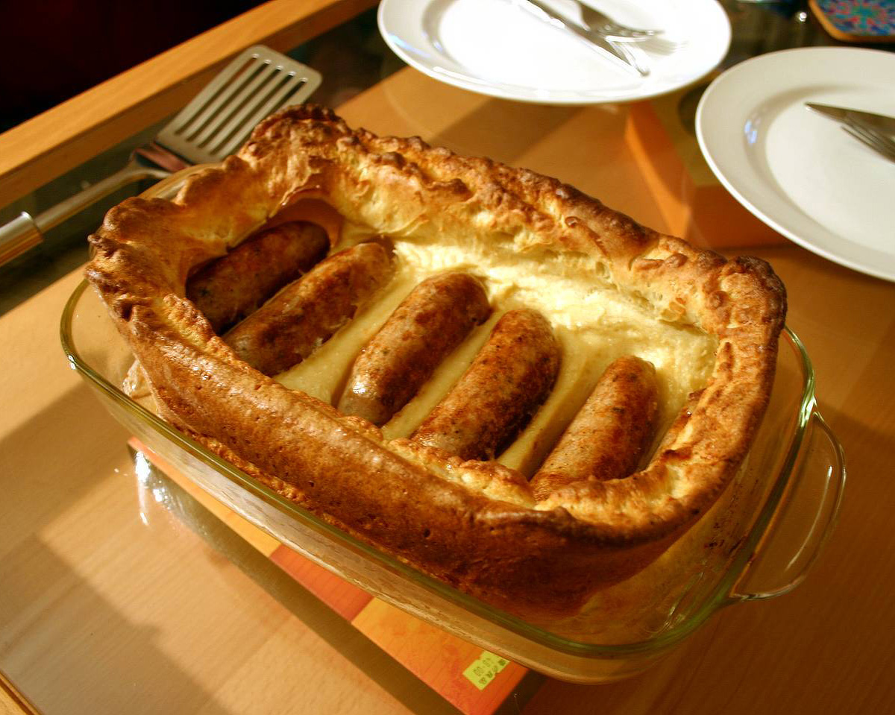

Toad In The Hole

What is Toad In The Hole?
Toad in the hole or sausage toad is a traditional English dish consisting of sausages in Yorkshire pudding batter, usually served with onion gravy and vegetables. Historically, the dish has also been prepared using other meats, such as rump steak and lamb kidney."
Ingredients
- Sausages that you like
- Half an onion, finely diced
- 4 Large Eggs
- 1 and 1/4 cups of All Purpose Flour
- 1 and 1/4 cups whole milk
- 2 tablespoons unsalted butter
- 1 spoon canola oil
- Salt, pepper and some mustard powder
Steps
- Preheat oven to 425°F. Whisk together salt, 1 1/4 cups of the flour, and 1/2 teaspoon of the pepper in a large bowl. Whisk together eggs and milk in a medium bowl until very well combined. Gradually whisk about half of the milk mixture into flour mixture until smooth and free of lumps. Gradually whisk in remaining milk mixture until thoroughly combined; set aside.
- Heat oil in a 12-inch cast-iron skillet over medium-high. Add sausages; cook, turning once, until browned on 2 sides, 2 to 3 minutes per side. Transfer sausages to a plate. Add rosemary sprigs to skillet; cook, stirring rosemary in drippings, until fragrant, about 30 seconds. Transfer to plate with sausages. Remove skillet from heat; do not wipe clean. Working quickly, pour prepared batter into skillet. Arrange sausages down center line of batter in skillet spaced 1 to 2 inches apart; arrange rosemary sprigs around sausages. Bake until puffed, lightly browned, and crisp around the edges, 25 to 30 minutes.
- Meanwhile, melt butter in a large skillet over medium until foamy. Add shallots; cook, stirring occasionally, until translucent, about 4 minutes. Sprinkle with remaining 2 tablespoons flour; cook, stirring constantly, 1 minute, 30 seconds. Slowly stir in stock, scraping up any flour stuck to bottom of skillet. Bring to a simmer over medium, stirring occasionally. Simmer, stirring often, until thickened, 3 to 4 minutes. Remove from heat. Stir in cream, Worcestershire, and remaining 1/2 teaspoon pepper. Stir in additional salt to taste. Keep gravy warm over low, stirring occasionally, until ready to serve.
- Remove skillet from oven; garnish Toad in the Hole with additional pepper. Serve immediately alongside warm gravy.
Return to main page